Small-batch favorite
Cheddar
Bold, cheesy, and made for snacking.
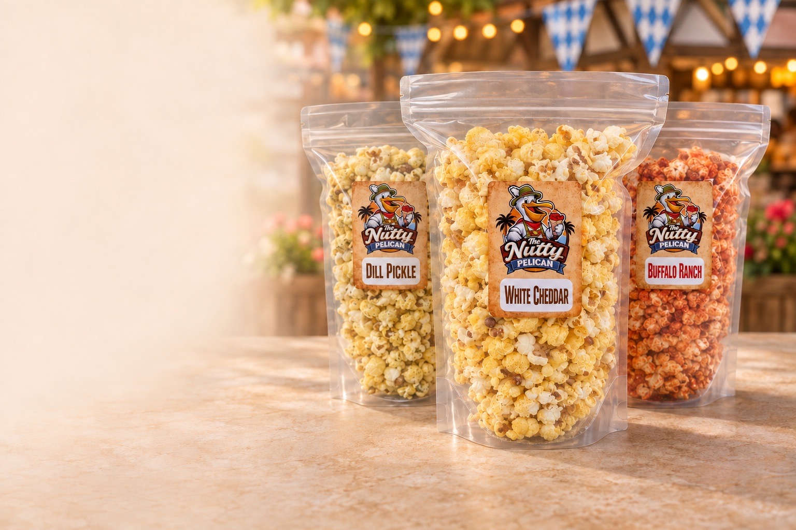
Small-batch gourmet popcorn &
warm Bavarian roasted nuts.
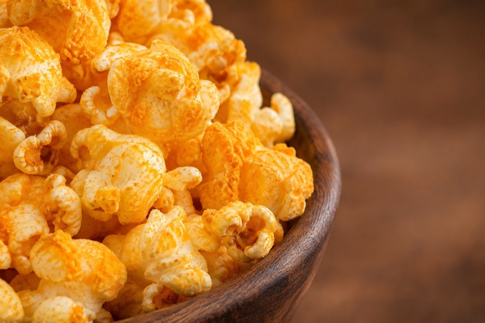
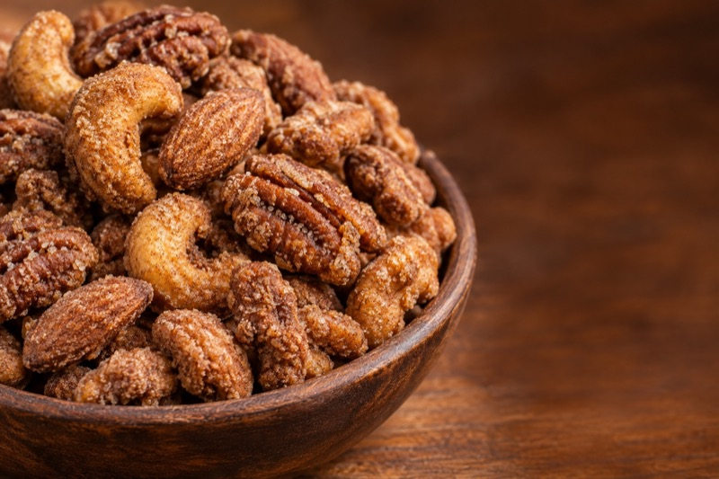
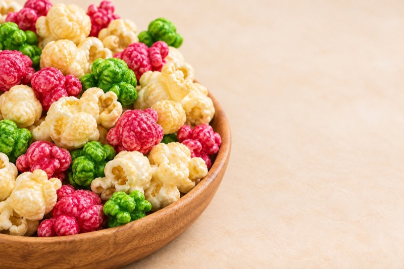
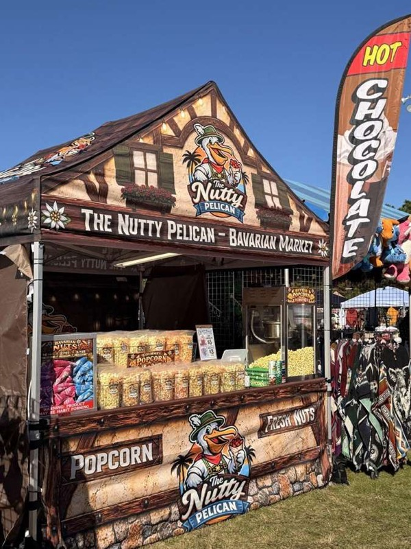
Family owned. Family made.
We’re a Wilmington family making gourmet popcorn and Bavarian roasted nuts in small batches. Find us where the community gathers, from local markets to festival days.
We’re also the family behind Lil’s Ice Cream. Good food and a warm welcome run in the family.
Find Us at an EventFresh from the popper
Sweet, savory, a little adventurous.
Seven current favorites, plus seasonal treats.
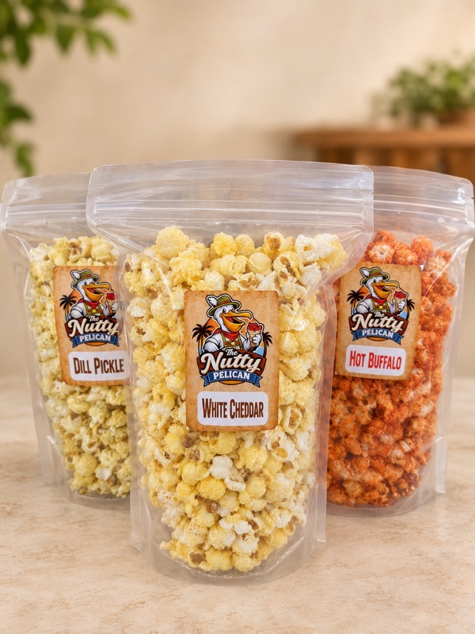
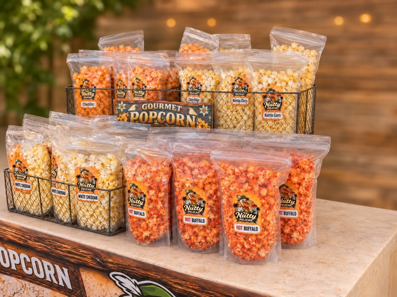
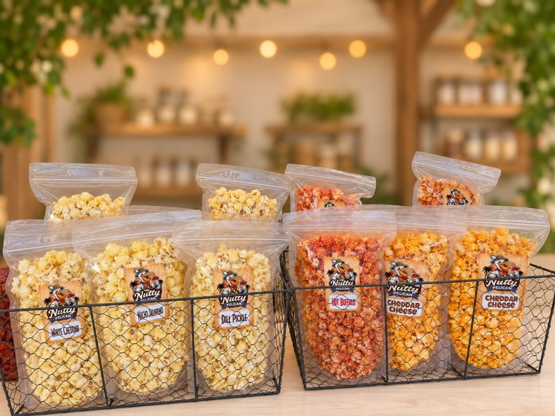
Bold, cheesy, and made for snacking.
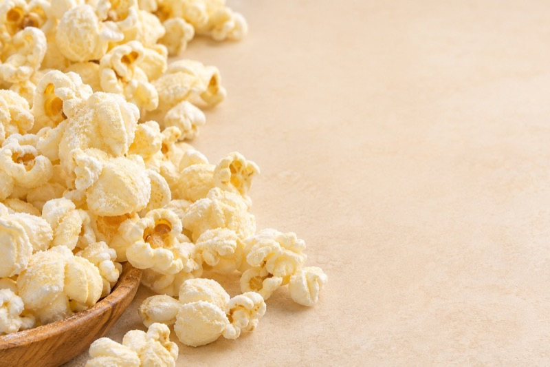
A mellow, creamy cheese favorite.
Tangy with a proper dill kick.
Buttery, golden, and a classic for a reason.
A little heat with a ranch-style finish.
A bright, tangy, savory favorite.
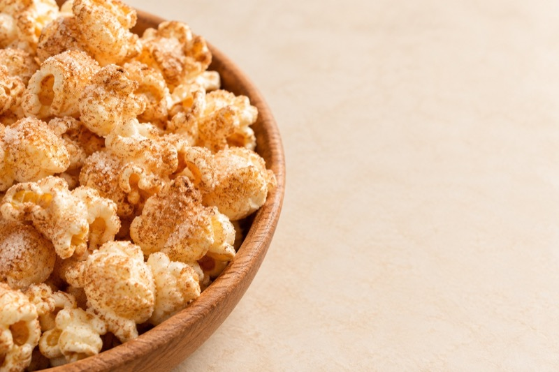
A sweet, cinnamon-inspired crunch.
A colorful treat for the holiday season.
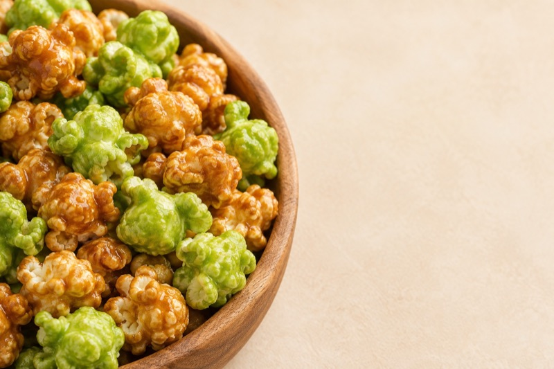
Caramel popcorn meets green apple-flavored popcorn.
Questions about ingredients or allergens? Contact us before ordering.
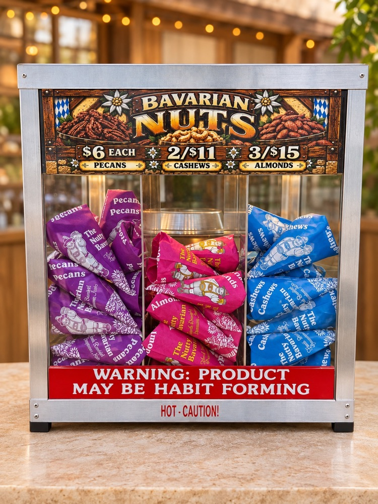
The other half of our name
Pecans, cashews, and almonds, Bavarian roasted and ready to enjoy. Made by our family in small batches and served from our stand.
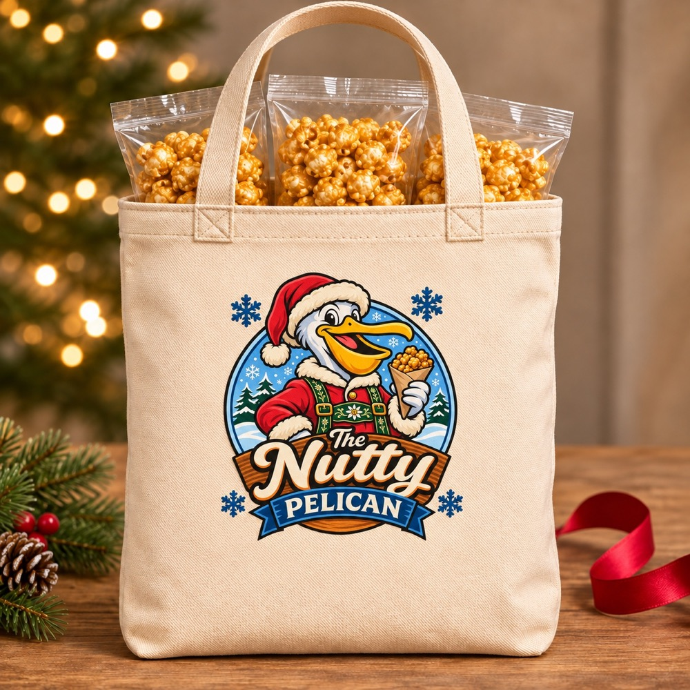
A little joy to go
Three pouches of gourmet popcorn tucked into a Nutty Pelican tote. Pick up a gift bundle at our holiday events.
Gift bundle availability varies by event.
See Holiday EventsCome hungry. Leave happy.
Planning a visit? Email us to confirm
the latest schedule and availability.
Through December 12
Amber Dale’s Pumpkin Patch and Christmas Trees
2307 N College Rd, Wilmington, NC
Get directionsFestivals · Markets · Private Events
We pop and roast on site. Tell us about your event, or check appointment options through Square, shared with our sister business, Lil’s Ice Cream.
Booking opens on Square’s website. If you need help or an accessible alternative, email us using the event inquiry button above.